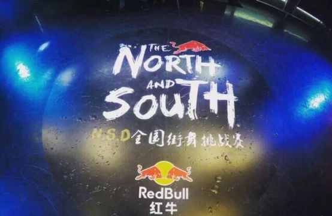
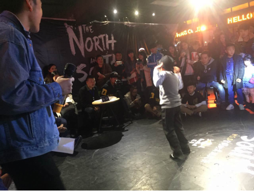
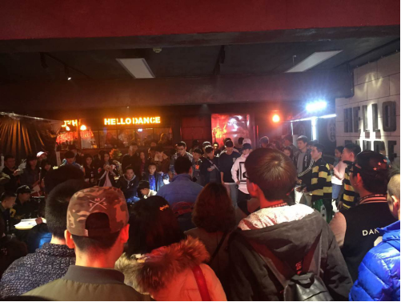

2015年12月6日N.S.D第一届全国街舞挑战赛成功举办

2015年12月6日晚上8：00，由“CDC-HipHop”发起的N.S.D第一届全国街舞挑战赛在成都春熙路第一城落下帷幕。活动现场超400余人到场观看比赛，38组来自全国不同区域的高校街舞团队参加此次比赛，并带来精彩演出； 活动主办方更是重金邀请到全国街舞界泰斗人物石头、孔祥、李哲、杨凯老师到场担任评委。
（杨凯老师）
（石头老师）
街舞挑战赛现场， 选手跳得热火朝天，评委评得专业犀利。比赛现场高潮迭起，现场观众按耐不住内心的狂热，尖叫声时起彼伏，现场氛围异常热闹。


（比赛现场）
据主办方“CDC-HipHop”负责人罗仁麒（目前为四川音乐学院大二流行舞蹈系学生）介绍，原本他们只想组办一场特别简单的街舞比赛，邀请一些好朋友参加即可，但在好友介绍下了解了【青年创】，【青年创】鼓励他们做出更大成绩，邀请他们在【青年创】平台发起众筹，让更多人知道本次活动，并进行支持。众筹发布不到2天，支持人数即突破了300余人，赞助费用也是很快突破了5000元。四川音乐学院校方在得知此信息后，更是给予大力支持，鼓励“CDC-HipHop”将本次活动规模做大，最终一场盛大的街舞比赛完美呈现。
（右侧： 罗仁麒）
发布时间：2015年12月7日
【青年创】全网首家大学生综合类服务平台 : 校园众筹创业、0元起拍大牌、下课兴趣约伴、专属校园购物、社团找钱赞助，有他，你还需要其他!